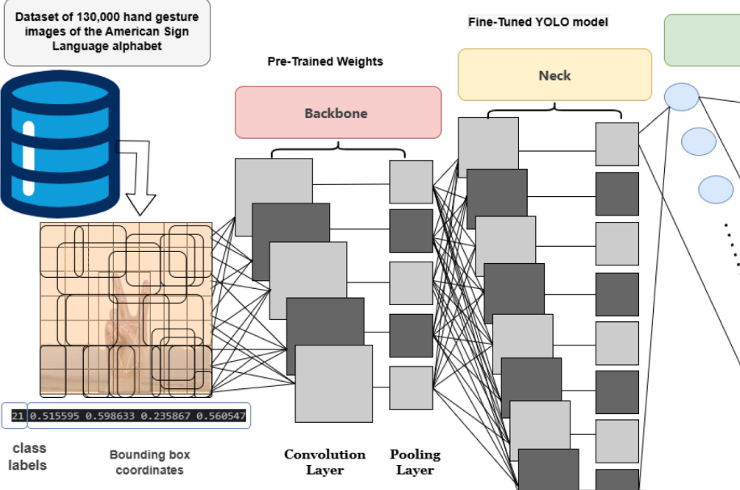
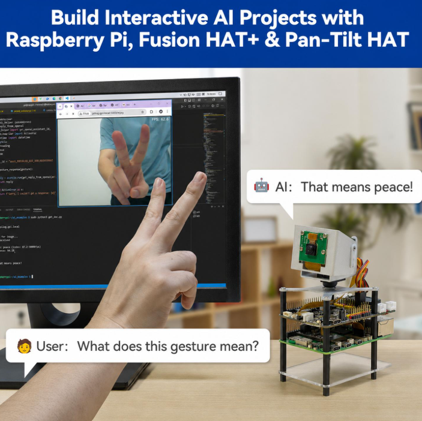
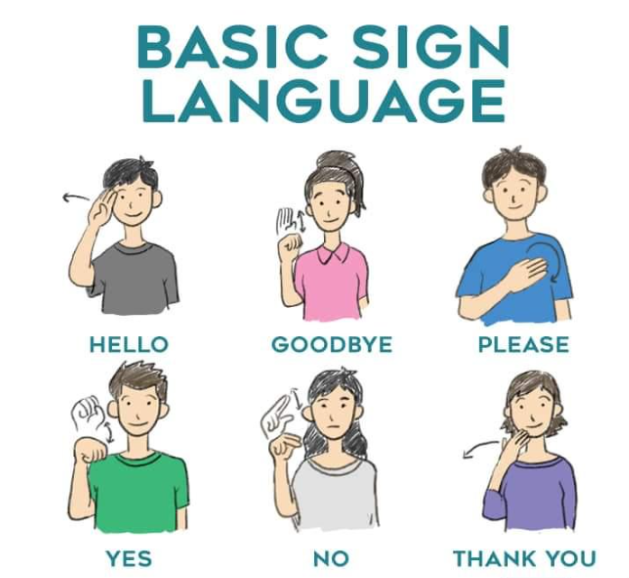
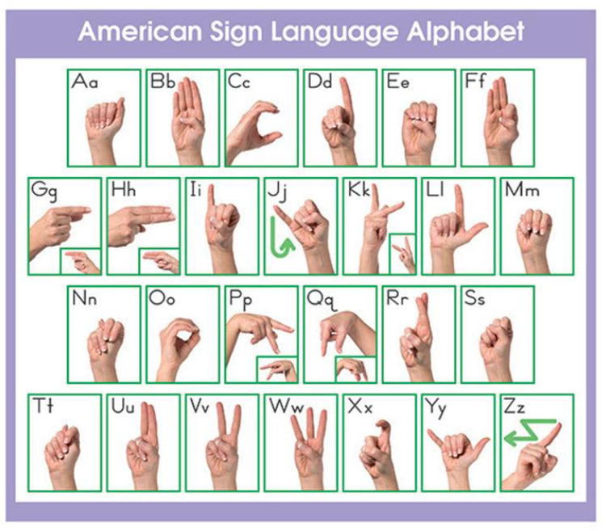

Hand Detection
Detect hand position and landmarks using the webcam and MediaPipe.
VJAYA ROBOTICS PROJECT
RASPBERRY PI AI PROJECTBuild an AI-powered Sign Language Gesture Recognition and Speech System using Raspberry Pi 5, Python, OpenCV and MediaPipe. Recognize hand gestures using a webcam, convert recognized signs into text and speak the result through a connected speaker.
Explore ProjectPROJECT OVERVIEW
This Sign Language Translator uses Raspberry Pi 5 as its main computing platform. A webcam captures the user's hand gestures and sends the video frames to the Python application.
MediaPipe detects the hand and extracts 21 hand landmarks. These landmarks are converted into numerical features that are processed by a trained machine learning model.
The AI model recognizes the hand gesture and displays the corresponding label on the screen. The text-to-speech module then converts the recognized label into spoken words.




WHAT IT CAN DO
Detect hand position and landmarks using the webcam and MediaPipe.
Recognize trained hand gestures using a machine learning model.
Display the recognized gesture as readable text.
Convert recognized text into spoken words using text-to-speech.
Display the AI model's confidence for the recognized gesture.
Collect your own hand-sign samples and train the AI model.
HARDWARE REQUIREMENTS
SOFTWARE REQUIREMENTS
The Python program is organized into separate files for configuration, hand tracking, speech output, data collection, model training and the main application.
HOW IT WORKS
AI SYSTEM ARCHITECTURE
Captures live hand gesture video using the webcam.
MediaPipe extracts hand landmarks and coordinate information.
Normalizes landmark coordinates into numerical input features.
The trained Random Forest model predicts the gesture label.
Displays the recognized gesture and confidence percentage.
Converts the recognized label into spoken words.
MACHINE LEARNING
The project includes a data collection program that allows you to record your own hand gestures. Each gesture is saved with a label and its corresponding hand landmark features.
You can collect samples for signs such as HELLO, YES, NO and THANK_YOU. After collecting the training samples, run the model training program to create the gesture recognition model.
PROGRAM STRUCTURE
Main application for live gesture recognition and speech output.
Camera settings, model paths and recognition configuration.
MediaPipe hand landmark detection and feature extraction.
Text-to-speech processing and voice output.
Collects and saves hand gesture training samples.
Trains the machine learning gesture classification model.
PROGRAMMING
Download the individual Python source files for the Sign Language Translator project.
main.py
Download Code ↓ 📄config.py
Download Code ↓ 📄hand_tracker.py
Download Code ↓ 📄speech.py
Download Code ↓ 📄collect_data.py
Download Code ↓ 📄train_model.py
Download Code ↓ 📄requirements.txt
Download Code ↓ 📄README.md
Download Code ↓PROJECT DEMONSTRATION
Sign Language Translator Demonstration
Add your actual Raspberry Pi project photograph or demonstration video here.IMPORTANT INFORMATION